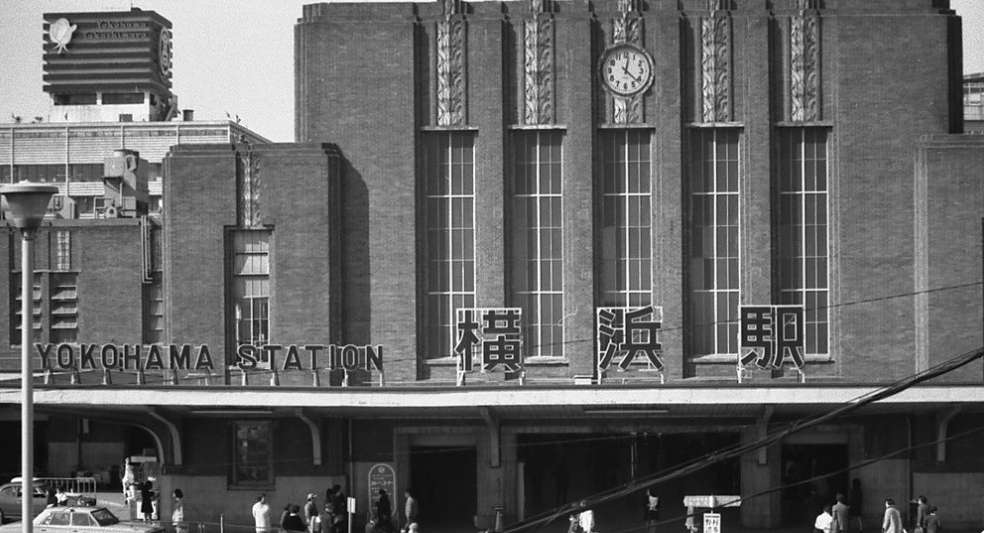
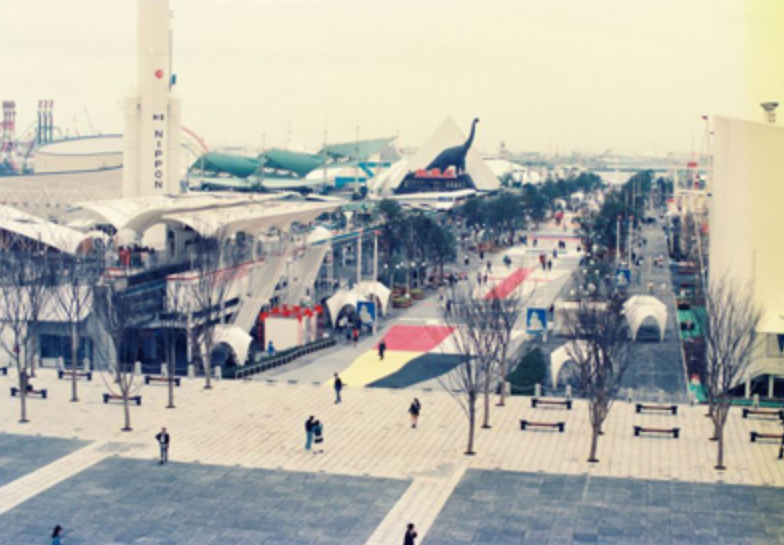
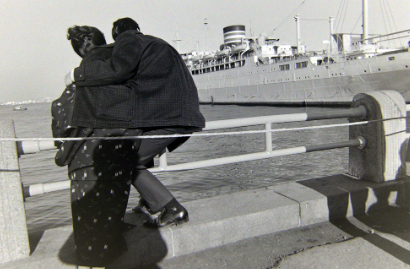
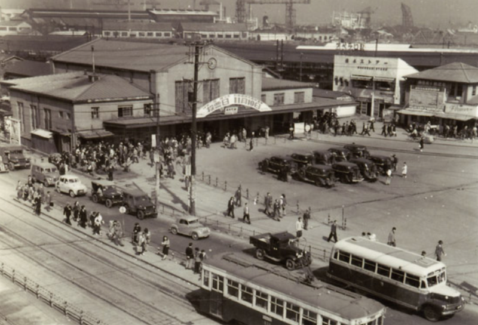
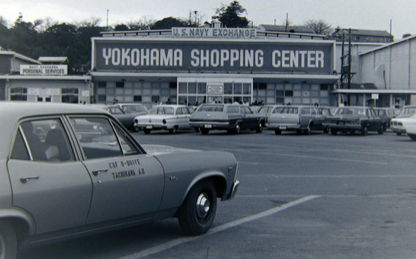
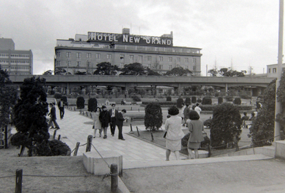
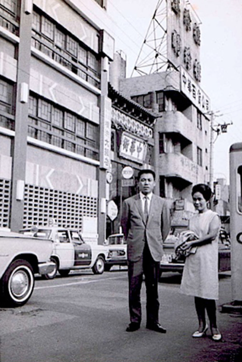
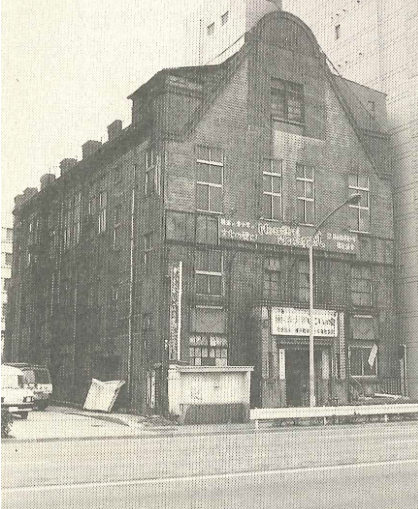
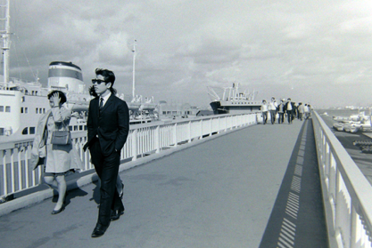
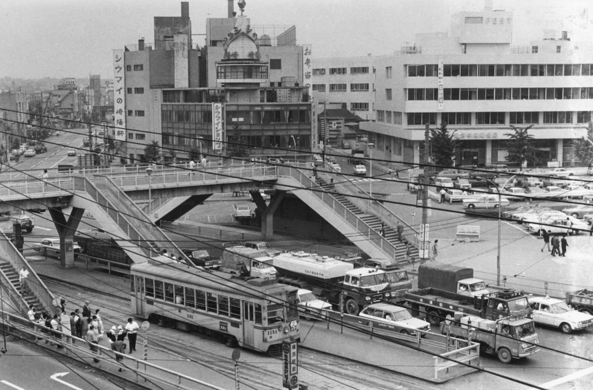

デザイン演習 第九回
シルバー世代インタビュー
質問と記憶装置（画像）
- 大学生の頃どこに誰と住んでいましたか？

- 学生時代の横浜で印象的だった建物はなんですか？

- 横浜での生活はどのような生活でしたか？

- 学生時代の横浜の生活で最も記憶に残っている思い出はなんですか？

- 学生時代、横浜での楽しかった思い出はなんですか？

- 学生時代、横浜での辛かったことはなんですか？

- 学生時代の横浜ではどこで遊んでいましたか？

- クリスマスはどのように過ごしていましたか？

- 昔の横浜の街並みと今の横浜の街並みはどのような違いがありますか？

- 昔の横浜駅と今の横浜駅はどのような違いがありますか？
